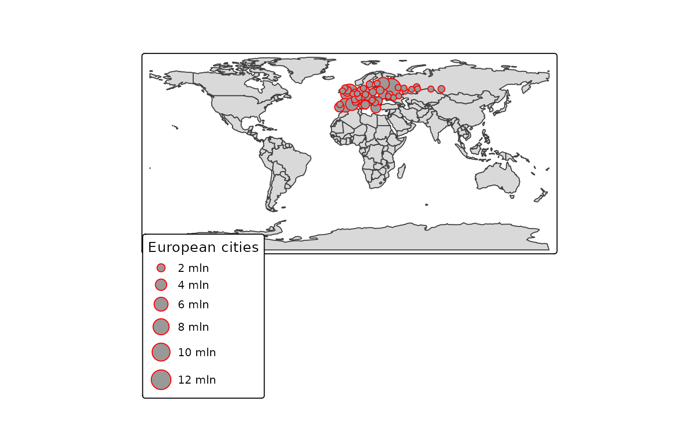

Crop a shape object (from class sf, stars, sp, or raster). A shape file x is cropped, either by the bounding box of another shape y, or by y itself if it is a SpatialPolygons object and polygon = TRUE.
Arguments
- x
shape object, i.e. an object from class
sf,stars,sp, orraster.- y
bounding box, an
st_bbox,extent(rasterpackage), or a shape object from which the bounding box is extracted (unlesspolygonisTRUEandxis ansfobject).- polygon
should
xbe cropped by the polygon defined byy? IfFALSE(default),xis cropped by the bounding box ofx. Polygon cropping only works whenxis a spatial object andyis aSpatialPolygonsobject.- ...
not used anymore
Details
This function is similar to crop from the raster package. The main difference is that crop_shape also allows to crop using a polygon instead of a rectangle.
Examples
if (require(tmap) && packageVersion("tmap") >= "3.99") {
data(World, NLD_muni, land, metro)
#land_NLD <- crop_shape(land, NLD_muni)
#qtm(land_NLD, raster="trees", style="natural")
metro_Europe <- crop_shape(metro, World[World$continent == "Europe", ], polygon = TRUE)
qtm(World) +
tm_shape(metro_Europe) +
tm_bubbles("pop2010",
col="red",
size.legend = tm_legend("European cities")) +
tm_legend(frame=TRUE)
}
#>
#> ── tmap v3 code detected ───────────────────────────────────────────────────────
#> [v3->v4] `tm_legend()`: use 'tm_legend()' inside a layer function, e.g.
#> 'tm_polygons(..., fill.legend = tm_legend())'
#> This message is displayed once every 8 hours.
#> [tip] Consider a suitable map projection, e.g. by adding `+ tm_crs("auto")`.
#> This message is displayed once per session.
